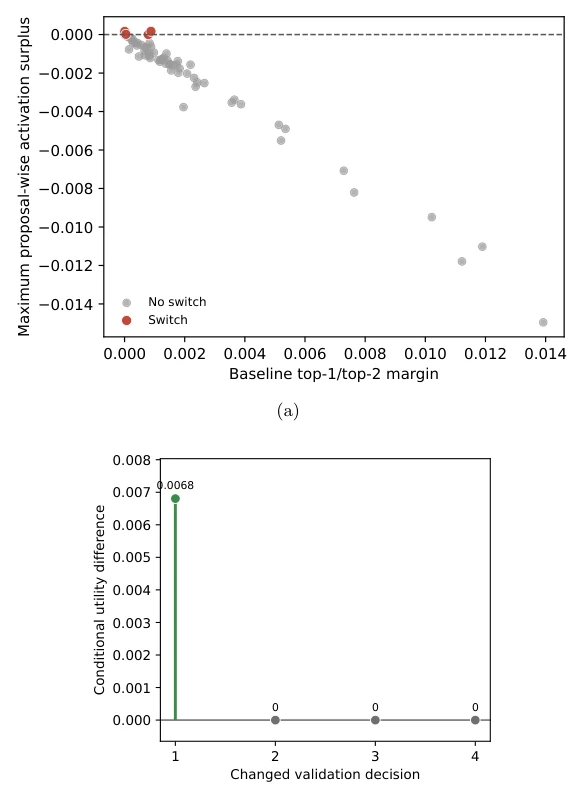
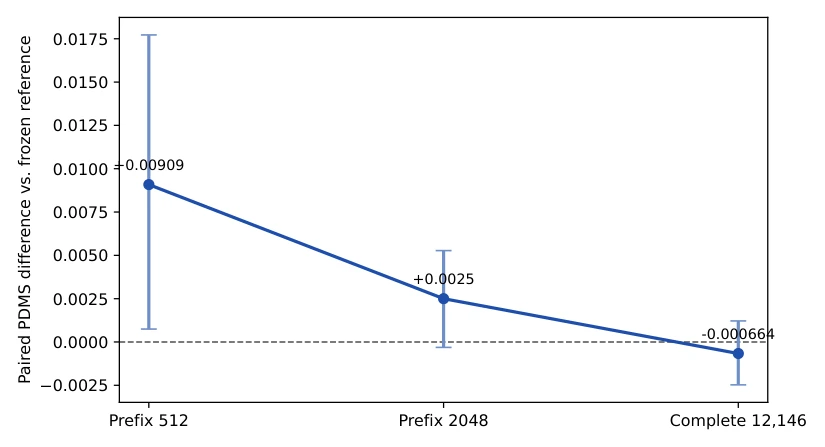
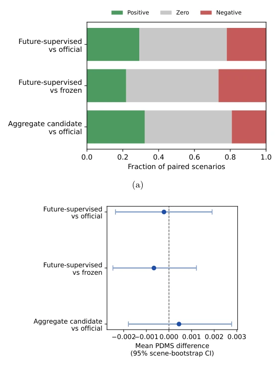
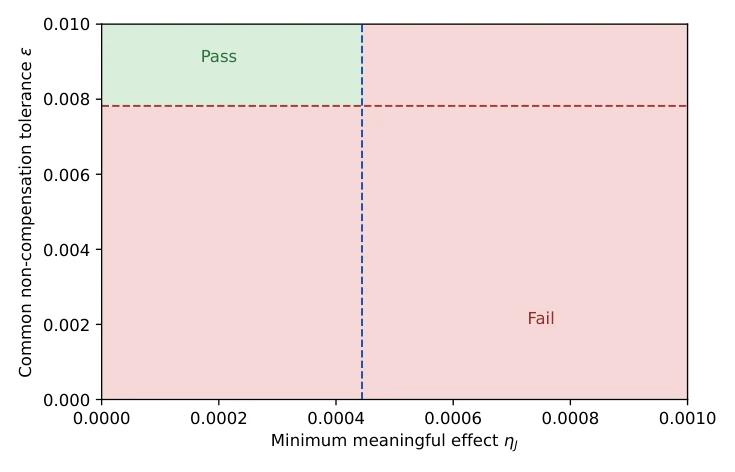
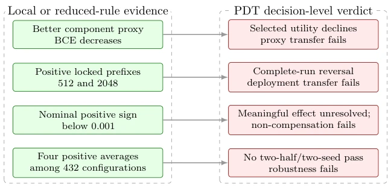
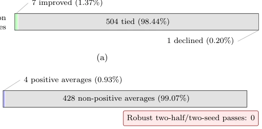

This paper serves as a 'check-up report' for autonomous driving planners, specifically debunking the myth that 'proxy metric improvement equals planning enhancement'. The authors did not invent a new model but developed a PDT framework that dissects the chain from 'prediction accuracy' to 'decision quality' into fragments. The highlight is the bold use of NAVSIM-v1 for a deep autopsy, revealing that many so-called 'advancements' are illusions under comprehensive evaluation, with even safety indicators regressing. The drawback is that the framework is too hardcore; ordinary researchers might find it cumbersome, and since only one model was tested, its generalizability is questionable. However, it indeed poured cold water on 'watered-down' papers that report BCE without decision outcomes, acting as a 'truth-revealing mirror' in the scientific community.
Autonomous driving planners increasingly rely on future perception and world models [3, 4, 5, 6], yet the evaluation system lags. Existing benchmarks such as NAVSIM [8] have improved scoring but fail to reveal how internal prediction gains translate into decisions. Many studies directly equate the reduction in proxy objectives (e.g., prediction loss) with planning improvement, overlooking proposal ordering and trajectory selection [1, 2]. This results in the paradox of 'accurate prediction but worse driving'. Existing predict-then-optimize research distinguishes between prediction accuracy and decision utility [12, 13, 14], but has not been implemented in end-to-end planning. This paper aims to fill this gap, preventing evaluation from being misled by proxy metrics and ensuring that improvements are genuine and effective.
The PDT framework comprises two core modules. The first is the Decision Transfer Decomposition module, which locates value loss via score margins, switch-conditioned utility, and support-versus-selection regret. It quantifies whether prediction improvements truly alter the top-1 trajectory selection, distinguishing rho (switch rate) and mu (switch utility) to prevent misjudgment based solely on global loss reduction. The second is the Reliability Constraint Verification module, which mandates precise pairing, scale expansion confirmation, safety non-compensation, sequence comparability, and statistical unit consistency to prevent overfitting. In terms of process, it audits five failure points (F1-F5) from the representation layer to the deployment layer: representation transfer failure, scoring transfer failure, selection transfer failure, support transfer failure, and deployment transfer failure. In terms of data flow, baselines and candidates are frozen, and verification occurs layer by layer on NAVSIM to ensure observed gains are not statistical noise or local overfitting; only full chain pass-through is deemed valid, otherwise the specific failure stage is reported.

Figure 2: Proposal-level decision-boundary diagnostics for one repeatable linear calibration run. (a) Maximum proposal-wise activation surplus against the baseline top-1/top-2 margin; red markers identify the four switched cases. (b) Utility differences for those four changed decisions; the markers and value labels make the three exact zeros visible, while the remaining decision improves by 0.00681.
Experiments are based on Drive-JEPA [7] and NAVSIM-v1 [8]. It was found that component BCE dropped from 0.705 to 0.530, while the selected trajectory PDM dropped from 0.963 to 0.961, proving that proxy improvements did not transfer. Gains were significant on 512 record prefixes, but upon expanding to 12,146 complete records, the interval included zero, even slightly negative. None of the 432 configurations passed the double-half-double seed robustness threshold. Key components such as TTC and collision rate regressed, masked by progress metrics. This confirms that local gains often fail at the deployment scale and there exists a safety compensation risk; PDT successfully identified these hidden decision transfer failure points.

Figure 3: Scale-expanded evaluation of the future-supervised candidate against the frozen reference. Error bars are 95% percentile intervals from 10,000 paired scenario-bootstrap resamples. Only the prefix512 interval excludes zero; the complete-support mean is slightly negative.

Figure 4: Complete-support paired evidence. (a) Fractions of positive, tied, and negative scenario differences. (b) Mean paired PDMS differences with 95% scene-bootstrap intervals. The intervals summarize the recorded scenario support and do not account for within-log dependence.

Figure 6: Sensitivity of the aggregate reliability verdict to the minimum meaningful effect ηJ and a common non-compensation tolerance ϵ. The dashed lines mark the observed aggregate difference and the minimum tolerance required to absorb the largest critical-component regression.

Figure 8: Observed conclusion reversals across the PDT chain. Positive local evidence is assigned to the transfer stage it supports and prevented from licensing a stronger downstream claim.
其他图片Other Figures

Figure 7: Decision coverage and calibration robustness. (a) Exact outcome counts for the direct- utility candidate on the 512-record prefix. (b) Outcomes of the 432 two-seed configurations in the frozen-tensor screen; none of the four positive average gains satisfies the predefined robustness gate.